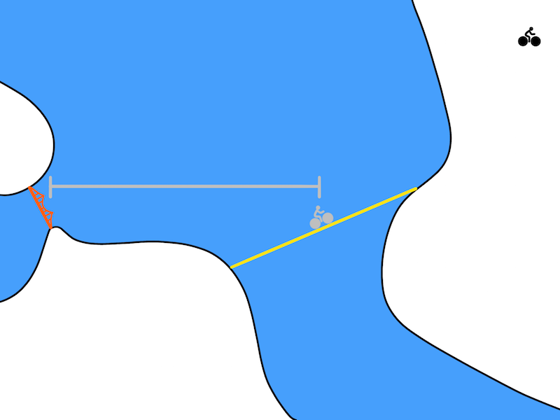

Deep Reinforcement Learning
Learned world models
Model-based RL algorithms with learned models
Model-based augmented model-free (MBMF)
- Dyna-Q: the model generates imaginary transitions/rollouts that are used to train a model-free algorithm.

NAF: Normalized advantage functions (Gu et al., 2016)
I2A: Imagination-augmented agents (Weber et al., 2017)
MBVE: model-based value estimation (Feinberg et al., 2018)
Model-based planning
- MPC: the learned model is used to plan actions that maximize the RL objective.

TDM: Temporal difference models (Pong et al., 2018)
World models (Ha and Schmidhuber, 2018)
PlaNet (Hafner et al., 2019)
Dreamer (Hafner et al, 2020)
I2A - Imagination-augmented agents
- I2A is a model-based augmented model-free method: it trains a MF algorithm (A3C) with the help of rollouts generated by a MB model.

They showcase their algorithm on the puzzle environment Sokoban, where you need to move boxes to specified locations.
Sokoban is a quite hard game, as actions are irreversible (you can get stuck) and the solution requires many actions (sparse rewards).
MF methods are bad at this game as they learn through trials-and-(many)-errors.
I2A - Imagination-augmented agents
- The model learns to predict the next frame and the next reward based on the four last frames and the chosen action.

It is a convolutional autoencoder, taking additionally an action a as input and predicting the next reward.
It can be pretrained using a random policy, and later fine-tuned during training.
I2A - Imagination-augmented agents

I2A - Imagination-augmented agents

The imagination core is composed of the environment model M(s, a) and a rollout policy \hat{\pi}.
As Sokoban is a POMDP (partially observable), the notation uses observation o_t instead of states s_t, but it does not really matter here.
The rollout policy \hat{\pi} is a simple and fast policy. It does not have to be the trained policy \pi.
It could even be a random policy, or a pretrained policy using for example A3C directly.
In I2A, it is a distilled policy from the trained policy \pi (see later).
Take home message: given the current observation o_t and a policy \hat{\pi}, we can predict the next observation \hat{o}_{t+1} and the next reward \hat{r}_{t+1}.
I2A - Imagination-augmented agents
The complete architecture may seem complex, but everything is differentiable so we can apply backpropagation and train the network end-to-end using multiple workers.
It is the A3C algorithm (MF), but augmented by MB rollouts, i.e. with explicit information about the future.
Policy distillation
The rollout policy \hat{\pi} is trained using policy distillation of the trained policy \pi.
The small rollout policy network with weights \hat{\theta} tries to copy the outputs \pi(s, a) of the bigger policy network (A3C).
This is a supervised learning task: just minimize the KL divergence between the two policies:
\mathcal{L}(\hat{\theta}) = \mathbb{E}_{s, a} [D_\text{KL}(\hat{\pi}(s, a) || \pi(s, a))]
- As the network is smaller, it won’t be as good as \pi, but its learning objective is easier.

Distral : distill and transfer learning
FYI: distillation can be used to ensure generalization over different environments.
Each learning algorithms learns its own task, but tries not to diverge too much from a shared policy, which turns out to be good at all tasks.

I2A - Imagination-augmented agents
Unsurprisingly, I2A performs better than A3C on Sokoban.
The deeper the rollout, the better.

I2A - Imagination-augmented agents
- The model does not even have to be perfect: the MF path can compensate for imperfections.

2 - Temporal difference models - TDM

TDM
One problem with model-based planning is the discretization time step (difference between t and t+1).
It is determined by the action rate: how often a different action a_t has to be taken.
In robotics, it could be below the millisecond, leading to very long trajectories in terms of steps.

If you want to go from Berkeley to the Golden State bridge with your bike, planning over leg movements will be very expensive (long horizon).
A solution is multiple steps ahead planning. Instead of learning a one-step model:
s_{t+1} = f_\theta(s_t, a_t)
one learns to predict the state achieved in T steps using the current policy:
s_{t+ T} = f_\theta(s_t, a_t, \pi)
- Planning and acting occur at different time scales.
TDM
- A problem with RL in general is how to define the reward function.
If you goal is to travel from Berkeley to the Golden State bridge, which reward function should you use?
+1 at the bridge, 0 otherwise (sparse).
+100 at the bridge, -1 otherwise (sparse).
minus the distance to the bridge (dense).
Goal-conditioned RL defines the reward function using the distance between the achieved state s_{t+1} and a goal state s_g:
r(s_t, a_t, s_{t+1}) = - || s_{t+1} - s_g ||
An action is good if it brings the agent closer to its goal.
The Euclidean distance works well for the biking example (e.g. using a GPS), but the metric can be adapted to the task.
Goal-conditioned RL
One advantage is that you can learn multiple “tasks” at the same time with a single policy, not the only one hard-coded in the reward function.
Another advantage is that it makes a better use of exploration by learning from mistakes: hindsight experience replay (HER, Andrychowicz et al., 2017).
If your goal is to reach s_g but the agent generates a trajectory landing in s_{g'}, you can learn that this trajectory is good way to reach s_{g'}!
In football, if you try to score a goal but end up doing a pass to a teammate, you can learn that this was a bad shot and a good pass.
HER is a model-based method: you implicitly learn a model of the environment by knowing how to reach any position.

Exploration never fails: you always learn to do something, even if this was not your original goal.
The principle of HER can be used in all model-free methods: DQN, DDPG, etc.
TDM
- Using the goal-conditioned reward function r(s_t, a_t, s_{t+1}) = - || s_{t+1} - s_g ||, how can we learn?

TDM introduces goal-conditioned Q-value with a horizon T: Q(s, a, s_g, T).
The Q-value of an action should denote how close we will be from the goal s_g in T steps.
If we can estimate these Q-values, we can use a planning algorithm such as MPC to find the action that will bring us closer to the goal easily:
a^* = \text{arg}\max_{a_t} \, r(s_{t+T}, a_{t+T}, s_{t+T + 1})
- This corresponds to planning T steps ahead; which action should I do now in order to be close to the goal in T steps?


TDM results
- For problems where the model is easy to learn, the performance of TDM is on par with model-based methods (MPC).

Model-free methods have a much higher sample complexity.
TDM learns much more from single transitions.

TDM results
- For problems where the model is complex to learn, the performance of TDM is on par with model-free methods (DDPG).

Model-based methods suffer from model imprecision on long horizons.
TDM plans over shorter horizons T.

World models
The core idea of world models is to explicitly separate the world model (what will happen next) from the controller (how to act).
Deep RL NN are usually small, as rewards do not contain enough information to train huge networks.

World models
A huge world model can be efficiently trained by supervised or unsupervised methods.
A small controller should not need too many trials if its input representations are good.
World models
The vision module V is trained as a variational autoencoder (VAE) on single frames of the game.
The latent vector \mathbf{z}_t contains a compressed representation of the frame \mathbf{o}_t.

World models

- Go to https://worldmodels.github.io/ for an interactive demo.
World models
The sequence of latent representations \mathbf{z}_0, \ldots \mathbf{z}_t in a game is fed to a LSTM layer together with the actions a_t to compress what happens over time.
A Mixture Density Network (MDN) is used to predict the distribution of the next latent representations P(\mathbf{z}_{t+1} | a_t, \mathbf{h}_t, \ldots \mathbf{z}_t).
The RNN-MDN architecture has been used successfully in the past for sequence generation problems such as generating handwriting and sketches (Sketch-RNN).

World models
- The last step is the controller. It takes a latent representation \mathbf{z}_t and the current hidden state of the LSTM \mathbf{h}_t as inputs and selects an action linearly:
a_t = \text{tanh}(W \, [\mathbf{z}_t, \mathbf{h}_t ] + b)
- A RL actor cannot get simpler as that…

https://worldmodels.github.io/
The controller is not even trained with RL: it uses a genetic algorithm, the Covariance-Matrix Adaptation Evolution Strategy (CMA-ES), to find the output weights that maximize the returns.
The world model is trained by classical supervised learning using a random agent before learning.
World models
The world model V+M is learned offline with a random agent, using unsupervised learning.
The controller C has few weights (1000) and can be trained by evolutionary algorithms, not even RL.
The network can even learn by playing entirely in its own imagination as the world model can be applied on itself and predict all future frames.
It just need to additionally predict the reward.
The learned policy can then be transferred to the real environment.
4 - Deep Planning Network - PlaNet

PlaNet
PlaNet extends the idea of World models by learning the model together with the policy (end-to-end).
It learns a latent dynamics model that takes the past observations o_t into account (needed for POMDPs):
s_{t}, r_{t+1}, \hat{o}_t = f(o_t, a_t, s_{t-1})
and plans in the latent space using multiple rollouts:
a_t = \text{arg}\max_a \mathbb{E}[R(s_t, a, s_{t+1}, \ldots)]


PlaNet: latent dynamics model
Source: https://ai.googleblog.com/2019/02/introducing-planet-deep-planning.html
PlaNet: latent dynamics model
- The latent dynamics model is a sequential variational autoencoder learning concurrently:
- An encoder from the observation o_t to the latent space s_t.
q(s_t | o_t)
- A decoder from the latent space to the reconstructed observation \hat{o}_t.
p(\hat{o}_t | s_t)
- A transition model to predict the next latent representation given an action.
p(s_{t+1} | s_t, a_t)
- A reward model predicting the immediate reward.
p(r_t | s_t)
- The loss function to train this recurrent state-space model (RSSM), with a deterministic component in the transition model (RNN) and stochastic components is not shown here.
PlaNet: latent dynamics model
- Training sequences (o_1, a_1, o_2, \ldots, o_T) can be generated off-policy (e.g. from demonstrations) or on-policy.

Source: https://ai.googleblog.com/2020/03/introducing-dreamer-scalable.html
PlaNet: latent space planning
Source: https://ai.googleblog.com/2019/02/introducing-planet-deep-planning.html
PlaNet: latent space planning
From a single observation o_t encoded into s_t, 10000 rollouts are generated using random sampling.
A belief over action sequences is updated using the cross-entropy method (CEM) in order to restrict the search.
The first action of the sequence with the highest estimated return (reward model) is executed.
At the next time step, planning starts from scratch: Model Predictive Control.
There is no actor in PlaNet, only a transition model used for planning.
PlaNet results
The latent dynamics model can learn 6 control tasks at the same time.
As there is no actor, but only a planner, the same network can control all agents!

Source: https://ai.googleblog.com/2019/02/introducing-planet-deep-planning.html
Dreamer
Dreamer extends the idea of PlaNet by additionally training an actor instead of using a MPC planner.
The latent dynamics model is the same RSSM architecture.
Training a “model-free” actor on imaginary rollouts instead of MPC planning should reduce the computational time.

Source: https://ai.googleblog.com/2020/03/introducing-dreamer-scalable.html
Dreamer: latent dynamics model
- The latent dynamics model is the same as in PlaNet, learning from past experiences.
Source: https://ai.googleblog.com/2020/03/introducing-dreamer-scalable.html
Dreamer: behavior module
The behavior module learns to predict the value of a state V_\varphi(s) and the policy \pi_\theta(s) (actor-critic).
It is trained in imagination in the latent space using the reward model for the immediate rewards (to compute returns) and the transition model for the next states.

Source: https://ai.googleblog.com/2020/03/introducing-dreamer-scalable.html
The current observation o_t is encoded into a state s_t, the actor selects an action a_t, the transition model predicts s_{t+1}, the reward model predicts r_{t+1}, the critic predicts V_\varphi(s_t).
At the end of the sequence, we apply backpropagation-through-time to train the actor and the critic.
Dreamer: behavior module
- The critic V_\varphi(s_t) is trained on the imaginary sequence (s_t, a_t, r_{t+1}, s_{t+1}, \ldots, s_T) to minimize the prediction error with the \lambda-return:
R^\lambda_t = (1 - \lambda) \, \sum_{n=1}^{T-t-1} \lambda^{n-1} \, R^n_t + \lambda^{T-t-1} \, R_t
- The actor \pi_\theta(s_t, a_t) is trained on the sequence to maximize the sum of the value of the future states:
\mathcal{J}(\theta) = \mathbb{E}_{s_t, a_t \sim \pi_\theta} [\sum_{t'=t}^T V_\varphi(s_{t'})]
Source: https://ai.googleblog.com/2020/03/introducing-dreamer-scalable.html
Dreamer
The main advantage of training an actor is that we need only one rollout when training it: backpropagation maximizes the expected returns.
When acting, we just need to encode the history of the episode in the latent space, and the actor becomes model-free!

Dreamer results
- Dreamer beats model-free and model-based methods on 20 continuous control tasks.


Dreamer results
- It also learns Atari and Deepmind lab video games, sometimes on par with Rainbow or IMPALA!